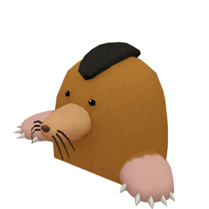
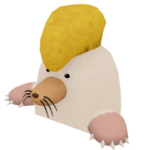
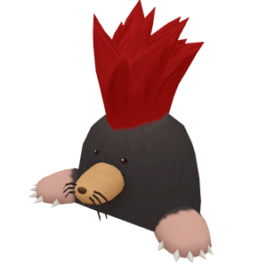

Minerales y lingotes


Las minas regresan a Story of Seasons: Pioneers of Olive Town. Las minas cuentan con múltiples niveles, y cada mina posterior es más profunda que la anterior. La forma y el tamaño de cada diseño de piso son aleatorios, y las posiciones de las escaleras también son diferentes cada vez. La mina novato es una mina simple sin lagos subterráneos, mientras que las otras minas tienen lagos subterráneos en pisos que son múltiplos de 10. Las minas intermedia y experta tendrán pisos con un diseño más grande y diferentes peligros a evitar.
Los lagos subterráneos que se encuentran en las minas albergarán una variedad diferente de peces. En conjunto, los lagos de la mina intermedia y la mina experta se denominarán lagos de mina del Área 2 y lagos de mina del Área 3 . Todos los lagos dentro de una mina tendrán la misma variedad de peces, por lo que no importa en qué fondo se encuentre el lago.
Ademas de los lagos tambien hay paredes brillantes donde podras extraer muchos materiales de ellasy te enfrentaras a unos enemigos los cuales son topos que te causaran daño si te asercas pero si los derrotas conseguiras un objeto especial con el que lo podras trazar para conseguir el objeto contenido.
Escaleras y trampas
En cada piso hay dos escaleras, una te llevará al siguiente piso y la otra es una salida. Si no se ve inmediatamente una escalera que baja, rompa las rocas para encontrar la escalera oculta. Además, las escaleras no aparecerán directamente al lado de una pared. La Mina Experta tiene trampas que pueden hacerte caer en un número aleatorio de pisos del 1 al 10. Ten cuidado, ya que tu resistencia disminuirá en proporción a la cantidad de pisos que caigas. ¡Mantén tu resistencia alta comiendo platos cocinados!.
| Número de pisos caídos | 01 | 02 | 03 | 04 | 05 | 06 | 07 | 08 | 09 | 10 |
|---|---|---|---|---|---|---|---|---|---|---|
| Pérdida de resistencia | 100 | 120 | 140 | 170 | 200 | 240 | 280 | 340 | 400 | 500 |
Recompensas del duende de magma
Hay tres minas encontradas en las secciones de la granja. El duende de magma te dará una recompensa la primera vez que llegues al último piso de cada mina. El tiempo seguirá pasando en las minas y a las 2:00 am comenzará el día siguiente después de que aparezca un mensaje diciendo que se va a dormir.
| Mina | Ubicación | Último piso | Premio |
|---|---|---|---|
| Mina Novato | Área de Granja 1 | B10 | 3 Ópalo blanco |
| Mina Intermedia | Área de Granja 2 | B30 | La cuevas de lava están desbloqueadas. |
| Mina Experta | Área de Granja 3 | B50 | 3 Diamante |
Depósitos de gemas
En Habilidad Minera Lv. 6 puedes crear el Creador de joyas y convertir gemas en bruto en joyas pulidas.
puedes obtener los materiales a travez de rocas especiales.
| Mina 2 - Mina Intermedia | |||
|---|---|---|---|
| Depósito | Artículo | Ubicacion | Apariencia |
| Depósito de rubí | Rubí crudo |
|
 |
| Mina 3 - Mina experta | |||
| Depósito | Artículo | Ubicacion | Apariencia |
| Depósito de rubí | Rubí crudo |
|
|
| Depósito de zafiro | Zafiro crudo |
|
 |
| Depósito de esmeraldas | Esmeralda crudo |
|
 |
| Depósito de oricalco | Mineral de oricalco |
|
|
Materias primas de las vetas de mineral
Las vetas de mineral en las paredes de la cueva aparecerán en pisos pares, excepto en los pisos que sean múltiplos de 10. Las vetas de mineral se pueden golpear con el martillo tres veces antes de que se agoten.
Mina 1 - Mina Novato
| Artículo | Tasa de abandono | Descripción | Apariencia |
|---|---|---|---|
| Mineral de hierro | 90% | Un trozo de mineral que contiene trozos de hierro resistente. |  |
| Piedra | 10% | Sólo tu piedra promedio. Por sí solo, puede que no valga mucho, pero si recolectas muchos, ¡quizás puedas hacer algo!. |  |
Para acceder a la Mina 1 - Mina novato es muy fácil, se ecncuentra en la zona 1 de la granja y puede entrar en el sin problema.
Esta mina consta de 10 niveles y tras completar la minata novato te regalaran 3 Ópalo blanco.
Mina 2 - Mina Intermedia
| Artículo | Tasa de abandono | Descripción | Apariencia |
|---|---|---|---|
| Mineral de plata | 50% | Un trozo de mineral que contiene trozos de plata esterlina. |  |
| Mineral de hierro | 20% | Un trozo de mineral que contiene trozos de hierro resistente. | |
| Roca de cristal | 10% | Un trozo de piedra que contiene trozos de vidrio. Con algunas técnicas especiales, se puede transformar en vidrio puro. |  |
| Trozo de carbón | 10% | Una piedra que dejará tus manos completamente negras si la tocas. Con algunas técnicas especiales, se puede transformar en carbón puro. |  |
| Piedra | 9% | Sólo tu piedra promedio. Por sí solo, puede que no valga mucho, pero si recolectas muchos, ¡quizás puedas hacer algo!. | |
| Diamante en bruto | 1% | Un diamante en bruto y sin procesar. |  |
Para acceder a la Mina 2 - Mina intermedia debes arreglar el primer puente que conecta la zona 1 de la granja con la zona 2, pero para eso se necesitarás 15 maderas. Después de reparar el puente, tendrá acceso a una nueva mina que es mucho más profunda.
Esta mina consta de 30 niveles y tras completar la minata intermedia desbloquearas una zona especial de los duendes.
Mina 3 - Mina Experta
| Artículo | Tasa de abandono | Descripción | Apariencia |
|---|---|---|---|
| Mineral de oro | 50% | Un trozo de mineral que contiene trozos de oro precioso. |  |
| Mineral de plata | 20% | Un trozo de mineral que contiene trozos de plata esterlina. | |
| Roca de cristal | 10% | Un trozo de piedra que contiene trozos de vidrio. Con algunas técnicas especiales, se puede transformar en vidrio puro. | |
| Trozo de carbón | 10% | Una piedra que dejará tus manos completamente negras si la tocas. Con algunas técnicas especiales, se puede transformar en carbón puro. | |
| Mineral de hierro | 5% | Un trozo de mineral que contiene trozos de hierro resistente. | |
| Piedra | 3% | Sólo tu piedra promedio. Por sí solo, puede que no valga mucho, pero si recolectas muchos, ¡quizás puedas hacer algo!. | |
| Diamante en bruto | 2% | Un diamante en bruto y sin procesar. | |
Para acceder a la Mina 3 - Mina experta debes arreglar el segundo puente que conecta la zona 2 de la granja con la zona 3, pero para eso se necesitará 50 Madera robusta, 20 lingotes de plata y 50 cementos. Después de reparar el puente, tendrá acceso a una nueva mina que es mucho más profunda.
Esta mina consta de 50 niveles y tras completar la minata novato te regalaran 3 diamantes.
Topos en la mineria
Comenzando con la mina intermedia, aparecerán topos llamados Malos en la mayoría de los pisos de la mina. Cuando salen del suelo, crean una onda de choque que agota la resistencia del jugador. Entrar en contacto directo con el malo también agotará la resistencia.
Un villano abandonará el suelo de la mina después de recibir varios golpes de tu martillo. Puedes martillar a los malos directamente, pero la mejor manera de encargarte de los malos más fuertes es cargar tu martillo y golpearlos desde lejos. El Malo experto se moverá más rápido y creará una onda de choque mucho más grande, pero el martillo de oricalco hará que sea un poco más fácil de manejar.
En la Mina Intermedia aparecerá solo un malo novato, pero en la Mina Experta tendrás que lidiar con varios malos al mismo tiempo. Un Malo novato tiene una onda de choque que alcanza casi 1 cuadrado completo de espacio, la onda de choque del Malo intermedio tiene un alcance mayor que 1 cuadrado completo y la onda de choque del Malo experto cubre 2 cuadrados completos. Las gotas comunes de todos los malos son las bayas silvestres, los trozos de carbón y la arcilla. Cada tipo de malo también tiene la posibilidad de dejar caer un tipo diferente de objeto para su evaluación.
Lista de Premios de los Malos
| Malos | Ubicación | Drops | Objeto único | Posibles tasaciones |
|---|---|---|---|---|
|  Malo Novato |
Mina 2 - Intermedia: Todos los pisos (Excepto: B10, B20, B30) |
|
Objeto desgastado. |
|
|  Malo Intermedio |
Mina 3 - Experta: B1 - B29 (Excepto: B10, B20) |
|
Objeto pesado |
|
|  Malo Experto |
Mina 3 - Experta: B31 - B49 (Excepto: B40). |
|
Objeto brillante |
|